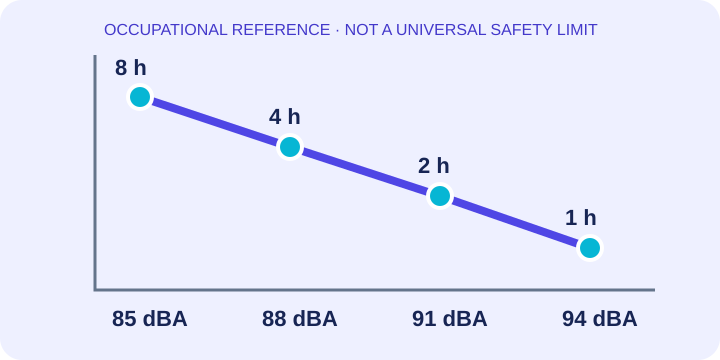
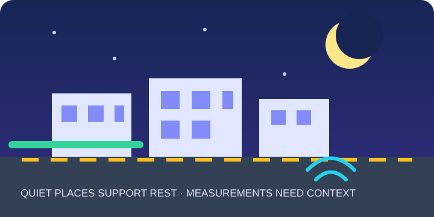
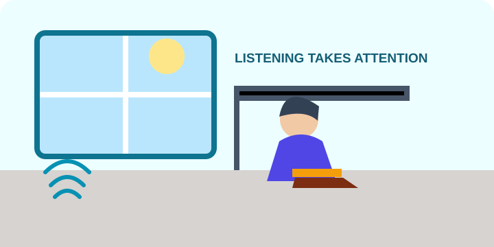
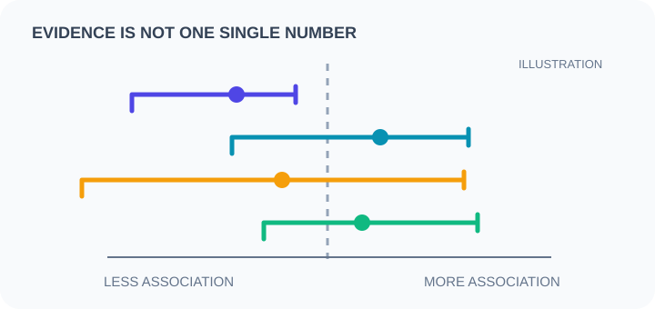

Decibels use a logarithmic scale. Small numeric changes can represent meaningful changes in sound energy; compare readings only when the meter and method are suitable.
Dashboard / Research & learning
The noise desk
Research notes, study guides and practical lessons on sound, health, learning and quieter communities.
SMARTNOISE · THE LEARNING DESKRESEARCH NOTES / ISSUE 01
Evidence, explained
What does the research say about everyday noise?
A reading guide to studies and public-health sources. Each cutting is a short, plain-language summary with a link to the original source.
First, learn what a sound reading can tell you
Sound level describes how strong a sound is at a place and time. A reading alone does not tell you who made the sound, how long it lasted, whether it disturbed sleep, or how a person experienced it. Good observation includes source, time, duration and setting.
A short peak and a steady exposure are different patterns. Record how long the sound continues and whether quiet breaks occur.
Indoor and outdoor readings, day and night, and occupational and community guidance answer different questions. Do not mix their limits.
Remember: SmartNoise microphone estimates are for learning patterns only. They are not calibrated measurements or proof of a legal violation.
Research & newspaper cuttings
Five short reads from the evidence desk
These are paraphrased study summaries, not reproduced paper pages. Open the source links to read the authors' methods and limitations.
HEARING · WORKPLACE REFERENCE
Why a 3 dB rise can halve recommended exposure time
NIOSH uses 85 dBA over an 8-hour work shift as its occupational recommended exposure limit.

For occupational noise, NIOSH’s 3 dB exchange rate means each 3 dB increase halves the recommended duration: 85 dBA for 8 hours, 88 dBA for 4 hours, and 91 dBA for 2 hours. This is a workplace reference, not a general outdoor or personal safety guarantee.
Study note: dBA accounts for frequency weighting; exposure duration matters alongside level. Phone microphones are not calibrated instruments.
Read CDC/NIOSH guidance ↗Source: US National Institute for Occupational Safety and Health (NIOSH), Understand Noise Exposure.SLEEP · ENVIRONMENTAL NOISE
Night noise and sleep: a guideline is not a personal diagnosis
WHO guidance links night-time road-traffic exposure above its recommended level with adverse sleep effects.

WHO’s European Region guideline strongly recommends reducing average road-traffic noise at night below 45 dB Lnight. That indicator is a long-term average outdoors, not a quick phone reading or a limit that predicts an individual’s sleep.
What to learn: separate a population guideline from a personal measurement. Sleep can also be affected by timing, peaks, building insulation, health and individual sensitivity.
Read the WHO guideline ↗Source: WHO Regional Office for Europe, Environmental Noise Guidelines (2018).SCHOOLS · LEARNING
Noise can make listening and reading harder—but evidence varies by source
Systematic reviews examine how transport and classroom noise relate to children’s cognition.

A 2018 review prepared for WHO examined studies on environmental noise and cognition in children. It found moderate evidence for some outcomes, including aircraft-noise effects on reading comprehension and long-term memory, while results differed by outcome and noise source. The authors called for stronger, more consistent research.
Study note: association does not prove that noise alone caused an outcome. Look for study design, population, measured exposure and uncertainty before drawing conclusions.
Read the systematic review (PubMed) ↗Source: Clark & Paunović, International Journal of Environmental Research and Public Health, 2018.COGNITION · SYSTEMATIC REVIEW + META-ANALYSIS
Noise and cognition: a broad review finds mixed certainty across outcomes
A 2022 review combined recent studies with an earlier evidence set and graded the strength of findings.

The review included 16 newer studies alongside 32 studies from a prior review. It reported high-quality evidence for an association between residential noise and cognitive impairment in middle-to-older adults, and moderate evidence for some aircraft-noise and child reading outcomes. Evidence for many other outcomes remained low or very low quality.
How to read it: pooled findings do not mean every person is affected in the same way. The authors called for more consistent studies and better estimates.
Read Thompson et al., Environment International (2022) ↗Source: Thompson et al., “Noise pollution and human cognition: An updated systematic review and meta-analysis of recent evidence,” 2022.RESEARCH METHODS · HOW TO READ
Four questions to ask before believing a noise headline
A quick checklist for reading studies and news coverage critically.
- What was measured? Sound level, duration, source, timing and location?
- Who was studied? Workers, children, residents, or a different group?
- What kind of study? A review, cohort, experiment, or one-time survey?
- How certain is it? Check sample size, confidence intervals, limitations and whether other studies agree.
A headline may compress a complex result. Read the abstract and limitations, and distinguish an observed association from a causal effect.
Example: systematic review of noise and cognition ↗Learning guide · SmartNoise editorial summary.Educational material only. It is not medical advice, legal advice, an official measurement, or an endorsement of any product. Research summaries are paraphrased; use the linked original sources for details.